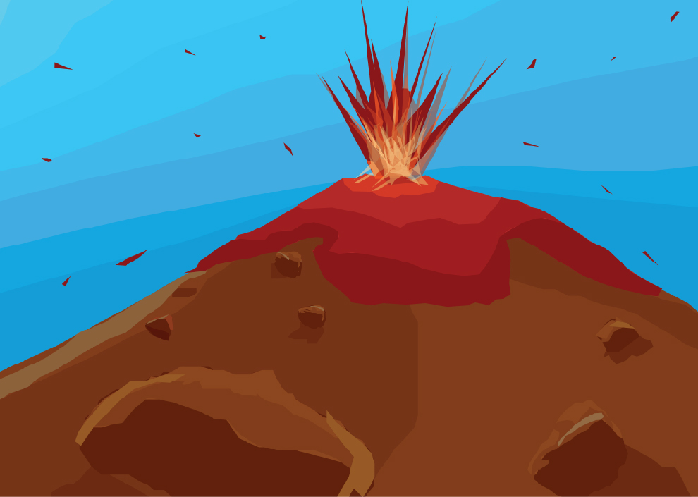
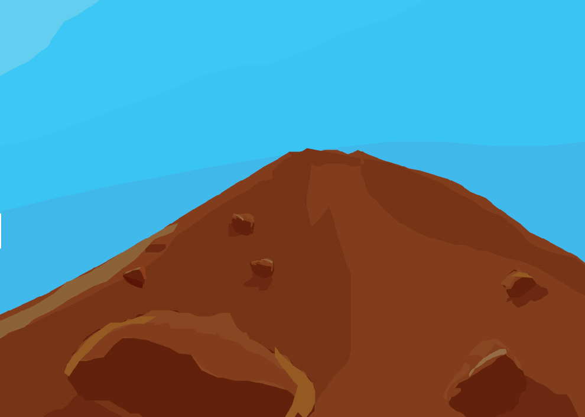

Vulcanismo
Este fenómeno geológico es una manifestación de la energía interna de la Tierra que afecta principalmente a las zonas inestables de la corteza terrestre.
Volcán
Los volcanes son las aberturas naturales en la corteza terrestre por donde brotan gases, cenizas y magma o roca derretida. Al magma después de una erupción se le llama lava, la cual acaba haciéndose sólida al enfriarse. Hay volcanes en los continentes y en los fondos oceánicos donde en ocasiones es posible verlos sobre el mar.
Este fenómeno geológico es una manifestación de la energía interna de la Tierra que afecta principalmente a las zonas inestables de la corteza terrestre.
Volcán
Los volcanes son las aberturas naturales en la corteza terrestre por donde brotan gases, cenizas y magma o roca derretida. Al magma después de una erupción se le llama lava, la cual acaba haciéndose sólida al enfriarse. Hay volcanes en los continentes y en los fondos oceánicos donde en ocasiones es posible verlos sobre el mar.
Tipos de Volcanes
Los volcanes tienen diversas clasificaciones las cuales están destinadas para diferentes estudios. En el caso de las formas de los volcanes éstas dependen, en muchas ocasiones, del espesor del magma y de la fuerza con la que sale.
Estratovolcan: alternan erupciones explosivas y erupciones tranquilas.
Calderas volcánica: depresiones volcánicas que se forman por una explosión de la cámara magmática.
Domo de lava: montículo que se origina en una erupción lenta de lava viscosa.
Escudo: está formado a partir de las capas de sucesivas erupciones.
Cono de Ceniza: fragmentos volcánicos que se acumulan alrededor de un cráter volcánico.
Campo Volcánico: área que es propensa a tener una actividad volcánica localizada. Por lo general, contienen de 10 a 100 volcanes.
Los volcanes tienen diversas clasificaciones las cuales están destinadas para diferentes estudios. En el caso de las formas de los volcanes éstas dependen, en muchas ocasiones, del espesor del magma y de la fuerza con la que sale.

Tipos de erupciones
Una erupción consiste en la emisión de materiales magmáticos, que son rocas fundidas acompañadas de gases y vapores, desde profundidades terrestres hacia la superficie. De acuerdo con los materiales predominantes y la forma de las explosiones existen en el mundo cuatro tipos fundamentales de erupciones:
Tipo hawaiano: lava sumamente fluida.
Tipo estromboliano: lava menos fluida que en el hawaiano pero permanece líquida.
Tipo vulcaniano: gran abundancia de productos viscosos.
Tipo peleano: arroja nubes ardientes a muy altas temperaturas.
Una erupción consiste en la emisión de materiales magmáticos, que son rocas fundidas acompañadas de gases y vapores, desde profundidades terrestres hacia la superficie. De acuerdo con los materiales predominantes y la forma de las explosiones existen en el mundo cuatro tipos fundamentales de erupciones:
Volcanes Mexicanos
En México existen cerca de 126 volcanes pero no todos han sido reconocidos como tales. Los principales volcanes de este sistema montañoso son:El Pico de Orizaba
El Iztaccíhuatl y el Popocatépetl
El Xinantécatl
La Malinche
El Paricutín
En México existen cerca de 126 volcanes pero no todos han sido reconocidos como tales. Los principales volcanes de este sistema montañoso son:
REFERENCIAS
Escuela Nacional de Estudios Superiores
Unidad Morelia
Antigua Carretera a Pátzcuaro No. 8701
Col. Ex Hacienda de San José de la Huerta
C.P. 58190 Morelia, Michoacán, México
Teléfonos:
Desde Morelia (443) 6-89-35-00